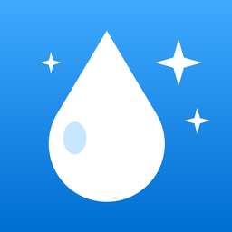

この汚れ、どの洗剤？
汚れ別・素材別の掃除ガイド
よくある質問
どんなアプリですか?
掃除する場所、汚れ、素材を選ぶだけで、使う洗剤の種類、手順、その素材でやってはいけないこと、注意事項がわかるアプリです。家にある洗剤を登録しておくと、結果に「家にある」と表示します。2つの洗剤を一緒に使ってよいかを調べる「混ぜるな危険チェック」もあります。
アプリの内容どおりにすれば必ず大丈夫ですか?
アプリの内容は一般的な掃除の目安です。製品のラベルと説明書の注意を最優先し、初めて使う洗剤や素材は目立たない所で試してから使ってください。洗剤は混ぜずに、換気をして、ゴム手袋をして使ってください。
商品名で探せますか?
商品名ではなく「洗剤の種類」(中性洗剤、塩素系漂白剤、クエン酸など)で案内しています。種類は、ボトルの裏の「液性」「成分」や、表の「まぜるな危険」の表示で確かめられます。アプリの「持ってる洗剤」に見分け方の説明があります。
インターネットにつながっていなくても使えますか?
使えます。掃除のデータはアプリの中に入っています。広告の表示にだけインターネットを使います。
「持ってる洗剤」のチェックはどこに保存されますか?
お使いの iPhone の中だけに保存されます。外部のサーバーには送信しません。
お問い合わせ
不具合のご報告や、データの間違いのご指摘、ご要望は、以下のフォームからお送りください。